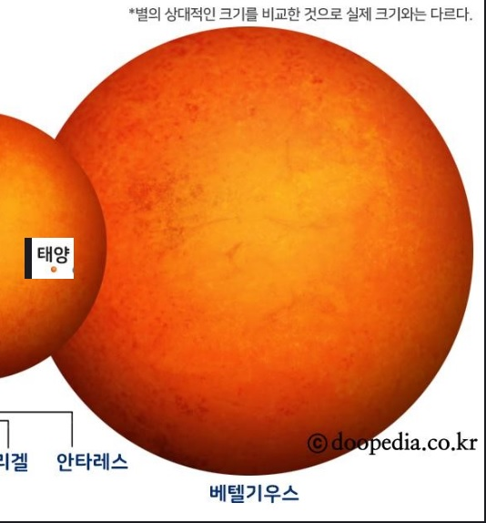
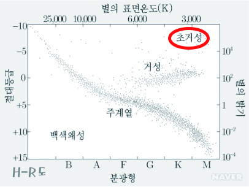

초거성
- H-R도에서 적색 거성보다 위쪽에 분포한다.
- 반지름이 매우 크고 밝지만 밀도는 적색 거성보다도 작다.
초거성 사진 ↓

초거성의 형성
질량이 태양의 40배가 넘는 별들은 헤르츠스프룽-러셀도표를 수평으로 가로질러 적색초거성이 되지 않고 강력한 항성풍을 포함하는 뜨거운 청색초거성이 된다. 무거운 원소를 합성할만큼 질량이 큰 이런 별들은 중심핵 붕괴로 초신성 폭발 이후 블랙홀이나 중성자별로 생을 마감한다. 질량이 조금 작은 청색초거성은 계속 팽창하여 적색초거성이 되기도 한다. 이렇게 적색초거성이 된 별은 제II형초신성으로 생을 마감하기 전 몇차례 청색초거성 단계를 반복하기도 한다.